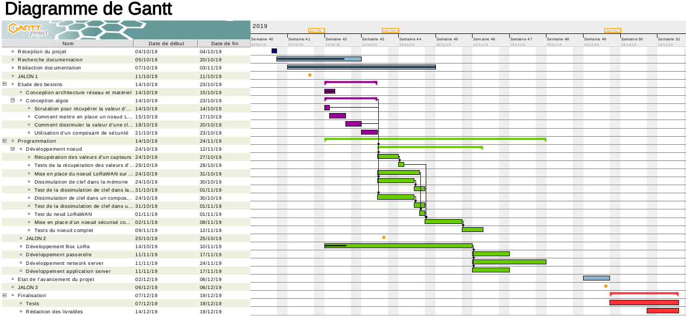
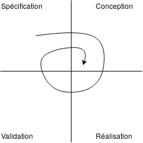

Répartition des tâches¶
Pour faire ce travail, nous sommes deux personnels travaillant à plein temps, Arthur et François. Nous devons donc répartir équitablement les tâches.
Dans un premier temps, nous allons tous les deux travailler au déploiement du réseau LoRaWAN.
François va ensuite se charger de la sécurisation de la passerelle, ainsi que des connections avec le network server et l”application server.
Arthur se chargera de travailler sur la sécurisation du noeud, et le transfert des informations vers la passerelle.
Tous les deux s’occuperont de rédiger constamment une documentation fournie ainsi que tous les documents livrables attendus.
Méthodologie¶
Pour gérer le projet nous utilisons un outil de versionning appelé Github, où on y met tout le code du projet, les sources ainsi que la documentation. Pour nous organiser tout au long de la période du projet nous avons créé un diagramme de GANTT. Nous le garderons à jour pendant toute la durée du projet. Pour avoir une gestion de projet plus précise (tâches à effectuer chaques semaines), nous utilisons l’onglet Project de notre repository Github. Dans cet onglet nous indiquons pour chaque semaine les différentes tâches à faire. Les tâches ont 3 états À faire, En cours et Fini nous déplaçons et nous ajoutons des tâches au cours de la semaine.
Le diagramme de Gantt ci-dessous récapitule notre organisation tout au long du projet.
{kind=link}
Organisation¶
Nous avons choisi une approche en spirale pour notre organisation. En effet, sur les conseils de notre encadrant, ce modèle nous permet de tester les différentes couches de sécurisation une à une et de revenir aux étapes précédentes si besoin pour modifier et compléter le dispositif.
Le schéma ci-dessous montre simplement le fonctionnement d’une organisation en spirale.
{kind=link}